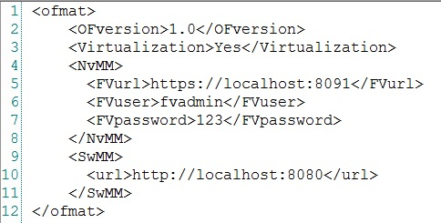

version 0.2
1. Dependences
This tool was developed based on two softwares, so it has some dependences. The first software
is the Floodlight controller, which acts in the communication with switches and retrieves
informations and statistics from them. So, OfMaT needs the Floodlight controller installed and
running at network. More instructions about its instalation are available at developer page
(Floodlight Web Site).
The other software used in OfMaT was FlowVisor, a network hypervisor that slices the network resources
allowing multiple virtual networks running over the same physical infrastructure. OfMaT only needs
this software if the network is sliced and its administrator wants to see information and statistics
about each slice. More instructions about its instalation are available at developer page
(
FlowVisor Web Site).
2. OfMaT Configuration
Ofmat has a configuration file ("ofmat.conf") where are some parameters required for its operation.
The OfMaT modules uses the values from this file to get the device management information. Its
content is organized according to the XML pattern as shown in the figure below.

The file must always have in the first line the tag "<ofmat>" and its closing "</ofmat>" should
appear on the last line. In the other lines of the file, there may be several tags:
- <OFversion> (mandatory): specify the version of the OpenFlow protocol that is in use. Possible values are "1.0" or "1.3";
- <Virtualization> (mandatory): parameter used to indicate if all network resources are being used in dedicated form (in this case the value is "No"), or if there is a slicing of the resources from the existing physical network (in this case the value is "Yes");
- <NvMM>: this parameter is only required if the <Virtualization> tag has the value "Yes". It will contain the necessary information so that the virtualization module (NvMM) can communicate with the network hypervisor. The informations must be specified using the tags <FVurl>, <FVuser> and <FVpassword>, which provide, respectively, the URL of the hypervisor, the user, and the password;
- <SwMM> (mandatory): contains the necessary information so that the switch module (SWMM) can communicate with the controller responsible for providing the statistics of the switches (Floodlight). Must be specified using the "<url>" tag, which will provide the URL of this controller.